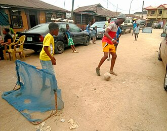
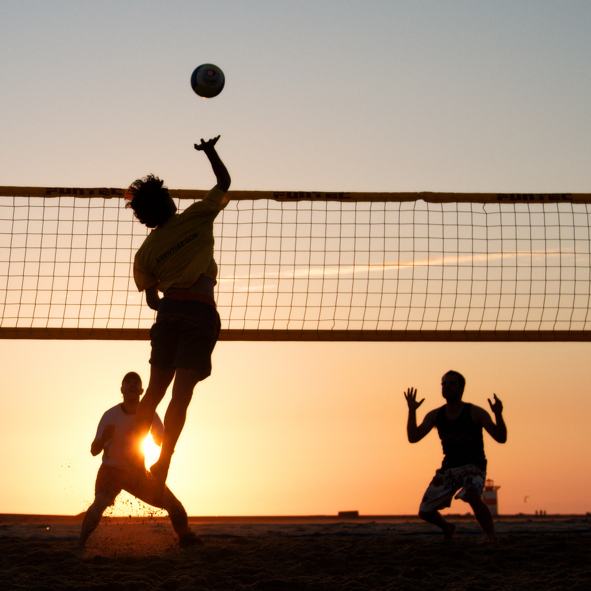
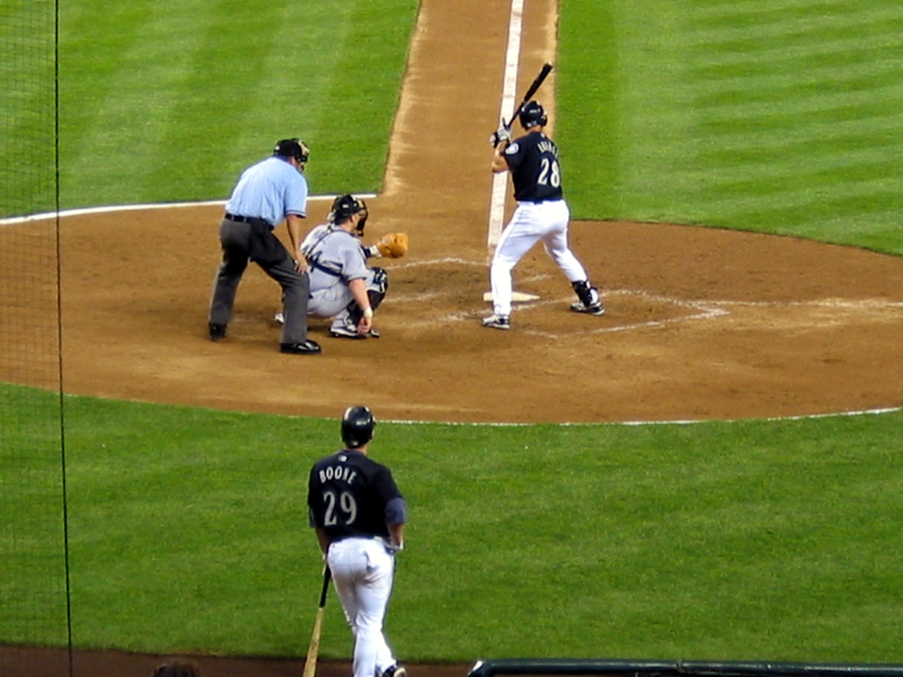
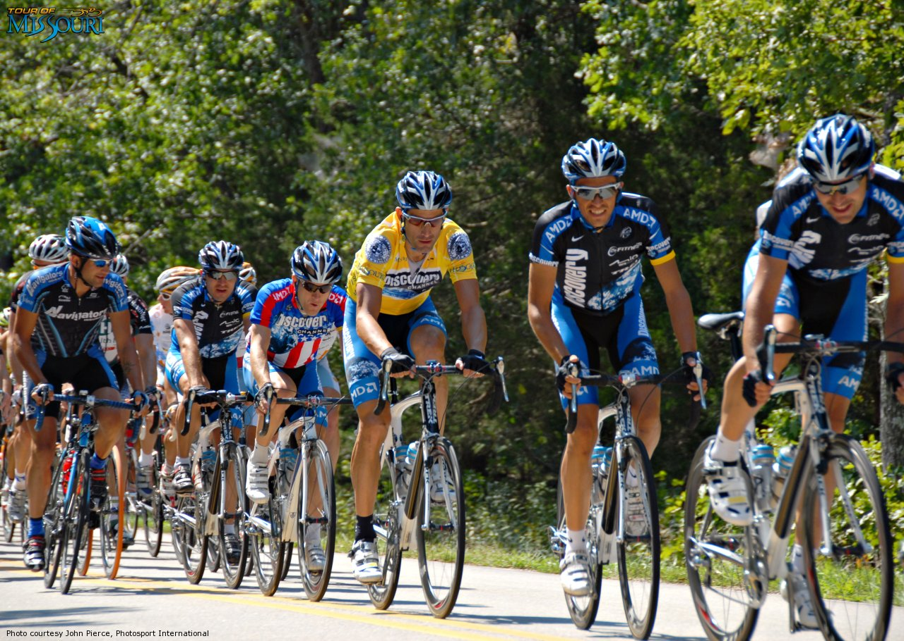
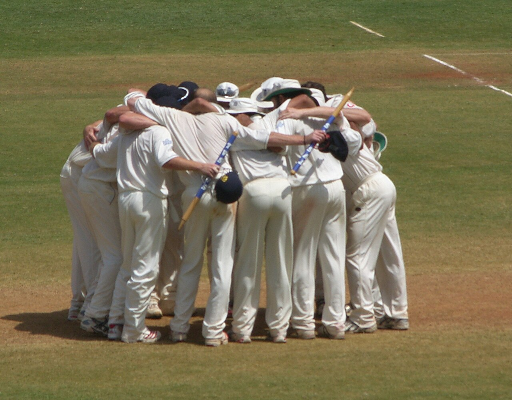

VENEZUELA'S PARTICIPATORY SPORTS
In Venezuela, sport is not just something you watch — it is something you live. Across the country's neighborhoods, parks, beaches, and community courts, Venezuelans of all ages come together through participatory sport to build friendships, strengthen communities, and share in the simple joy of playing. Visitors are always welcome to join in, making participatory sports one of the most authentic ways to connect with Venezuelan culture.
From the dusty pickup football pitches of the barrios to the beach volleyball courts of Margarita Island, participatory sport in Venezuela is a powerful social equalizer — a space where backgrounds are set aside and the only thing that matters is the game. These shared sporting moments are some of the most genuine and memorable experiences a visitor to Venezuela can have.
STREET FOOTBALL

Street football is the lifeblood of Venezuelan neighborhoods, played on concrete courts, dirt patches, and sandy beaches from sunrise to sunset. In every barrio, a pickup game is never more than a few steps away, with teams forming spontaneously and strangers becoming teammates within minutes. Futsal — the fast, technical indoor version of football — is particularly popular in Venezuela's urban communities, producing players of extraordinary skill and creativity. Visitors who join a street football game are guaranteed one of the most authentic and joyful cultural encounters the country has to offer.

Parque del Este in Caracas is one of the best places in the capital to find a pickup football or futsal game at almost any hour of the day. On Venezuela's coasts, the beaches of Lechería in Anzoátegui and Puerto La Cruz are famous for their spirited barefoot beach football games where tourists are always warmly welcomed to join.
BEACH VOLLEYBALL

With thousands of kilometers of Caribbean coastline, Venezuela is one of the finest beach volleyball destinations in South America. Permanent beach volleyball courts are a fixture of Venezuelan coastal life, buzzing with activity morning, afternoon, and into the golden hours of sunset. The sport is enjoyed by all ages and skill levels, and the welcoming culture of Venezuelan beach communities means visitors are always invited to join the next game.

Playa El Agua on Margarita Island is Venezuela's most celebrated beach volleyball destination, with permanent courts set up along one of the most beautiful stretches of Caribbean coastline in the country. The beaches of Morrocoy National Park and Playa Colorada near Puerto La Cruz are equally popular for beach volleyball, attracting both local players and visiting tourists.
COMMUNITY BASEBALL

Community baseball is woven into the very fabric of Venezuelan daily life, played on sandlots, schoolyards, and local diamonds in every city, town, and village. Weekend community tournaments draw entire neighborhoods together, with families setting up along the baselines and the smell of grilled food filling the air. For a visitor, showing up to a community baseball game in Venezuela is an immediate invitation into the warmth and generosity of Venezuelan family life.
The cities of Valencia, Maracaibo, and Maracay are the heartlands of Venezuelan community baseball, with dozens of neighborhood diamonds operating every weekend. Valencia in particular — home of Navegantes del Magallanes — breathes baseball at every level, from professional to street, making it the ideal city for any baseball lover to experience the sport in its most pure and unfiltered Venezuelan form.
CYCLING GROUPS & ROAD RIDES

Cycling communities have flourished across Venezuela, from organized city cycling clubs in Caracas and Maracaibo to spirited mountain trail groups exploring the Andean highlands. Early morning group road rides are a beloved weekend ritual in Venezuelan cities, with cyclists of all abilities gathering before dawn to share the roads. The Andean region offers some of the most dramatic cycling terrain in South America, with exhilarating descents through cloud forest and challenging climbs rewarded by breathtaking panoramic views.
The city of Mérida in the Venezuelan Andes is the undisputed cycling capital of the country, surrounded by mountain roads that challenge and inspire riders of every level. Mérida's cycling clubs warmly welcome visiting riders and can organize guided routes through some of the most spectacular mountain scenery in all of South America.

Come to Venezuela and do not just watch the game — play it. Step onto a beach volleyball court as the Caribbean breeze rolls in, join a sunrise cycling group through the Andes, or find yourself in the middle of a passionate street football match in a Caracas neighborhood. In Venezuela, the greatest sports experience is not in the stadium — it is in the streets, on the sand, and among the people. Come and play.